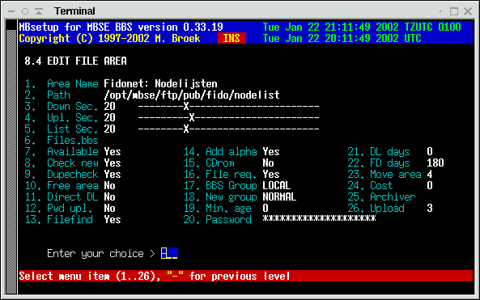
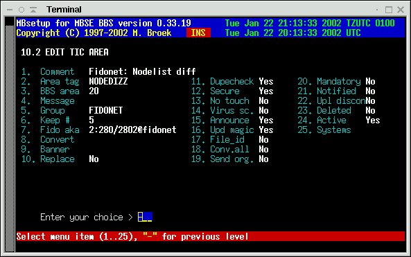
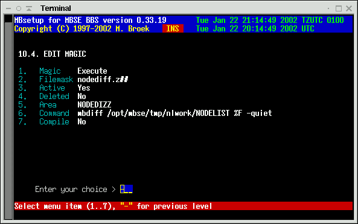
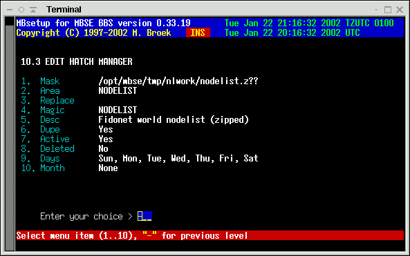
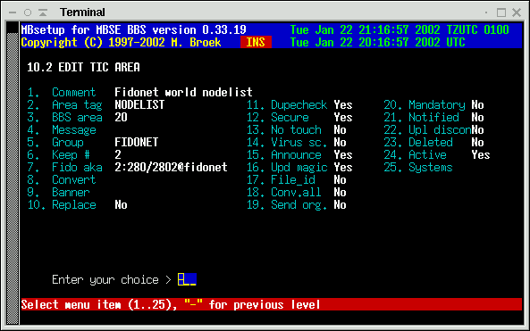
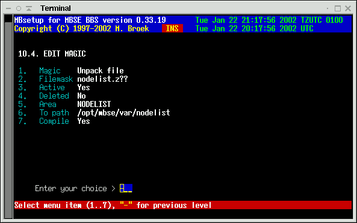

Last update 22-Jan-2002
Nodelist and Nodediff processing
Introduction
A received a lot of questions about nodelist and nodediff processing, so
I will describe here the setup of the development system for the Fidonet
nodelist. First of all, it is very important that you
use three separate directories to do the nodelist processing. This is to
make sure that all stages are independent of each other, and if something
goes wrong, you still have a working system. The three directories are:
- /opt/mbse/ftp/pub/fido/nodelist, this is the public download area, the received diff's are stored here as well as the final compressed nodelists for download.
- /opt/mbse/tmp/nlwork, this is the working directory to apply diffs to the previous nodelist. This directory should allways contain the latest uncompressed nodelist.
- /opt/mbse/var/nodelist, this is the systems nodelist directory defined in mbsetup, menu 1.4.4
- Receive the nodediff and store it for download.
- Apply the diff to the latest nodelist.
- Hatch the new compressed nodelist.
- Store the new nodelist for download.
- Unpack the new nodelist in the nodelist compiler directory.
- Set the compile semafore.
- Compile the nodelists.
The download area
First define the download area for the bbs. In my case, this is area 20. From here users can download the nodelists and nodediffs, files to the downlinks are send from here. Below is the example of my system.

The NODEDIFF tic area
From your uplinks you usually receive NODEDIFF or NODEDIZZ files. Create a tic area for that purpose. I have keep# set to 5, this means the last 5 diff's are stored in the download directory, older ones are removed. Now you can receive nodediff files, store them for download, and send them to other nodes.

Apply the diff
We do this with the tic magic processor. In this example
I have NODELIST.007 in the /opt/mbse/tmp/nlwork directory.
Note that this filename is uppercase, they are usually stored and distributed
as uppercase names. As I receive the diff files as zip, the filemask on
my system is nodediff.z##.
This means that the file with the name nodediff.z14 in the area NODEDIZZ
is a match. The command that is executed expands to
mbdiff /opt/mbse/tmp/nlwork/NODELIST /var/spool/mbse/ftp/pub/fido/nodelist/nodediff.z14 -quiet
if the received nodediff is
nodediff.z14.
The mbdiff program applies
nodediff.z14 against NODELIST.007 in the
/opt/mbse/tmp/nlwork directory. If this is successfull, a
new NODELIST.014 is created there, a compressed
nodelist.z14 is created there and NODELIST.007 is
removed.
If this operation fails, only NODELIST.007 will stay
in that directory.
Because the ARC program for GNU/Linux isn't good for files, I
left the Arc files command empty in the archiver setup. As a fallback the
mbdiff program uses zip to create the compressed archive.
If creating the new nodelist fails for some reason, a missed diff or so,
the whole processing stops here. The previous nodelist is still here and
you can manually correct the situation. So, if you missed a diff, see that
you get it and manually give the mbdiff commands as user
mbse until you are up to date. Or, place the latest
uncompressed nodelist in the directory /opt/mbse/tmp/nlwork.

Processing the new nodelist
Now that we have created the new compressed nodelist, it has to go somewhere. The file nodelist.z14 is in the directory /opt/mbse/tmp/nlwork. The example for the hatch manager is shown below. The hatch manager runs automatic with the comand mbfido tic. This setup will hatch the new nodelist in the tic area NODELIST The two screens below show the hatch and tic setup for this area.
 
Now that we have hatched the new nodelist and processed it the new nodelist is stored in in the download area, and maybe send some copies to downlinks. We now have to feed it to the nodelist compiler for our own system. We use a tic magic command to do that. In this case we unpack the nodelist in /opt/mbse/var/nodelist and set the compile semafore so that the mbindex will compile the new nodelist. Don't be afraid that the unpacked nodelists will acumulate in the nodelist directory, mbindex will handle that, only the latest two nodelists are kept there. The mbindex program is started by the taskmanager mbtask.
